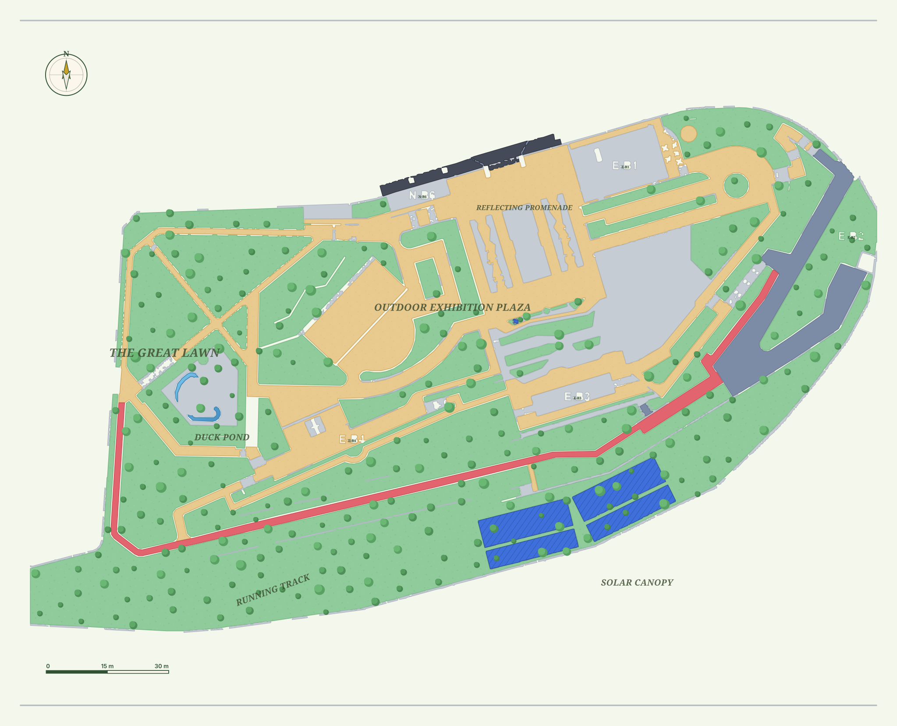

Beirut · Achrafieh
Sioufi Garden
Tap a pin to step into that spot in 360°. Muted pins don’t have footage yet.

Drag to pan · tap a pin to explore
Loading…
Sioufi Garden · Beirut
Area – of –
Loading area…
Tap again for details